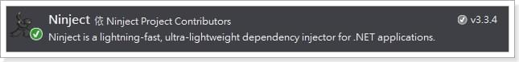
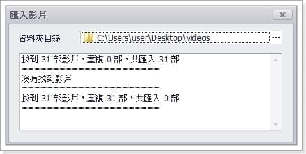

最近在寫Windows Forms App時遇到了一些小問題，於是就想到或許可以透過一些Dependency Injection的特性來解決這些問題，於是有了這篇文章。
尋找 DI 套件
之前在寫網頁時都是靠Autofac實現依賴注入，但在Windows Form又該如何做到勒？
我Google後試用了下面兩款套件：
兩款都可以簡單的做到DI，但最終我選擇了Ninject，原因在於它相較於第一款更簡單(這點我不確定，也可能是我理解不夠)。
使用 Ninject
決定好之後就立刻用Nuget把它裝起來吧。

Ninject Module
若有特別的需求時，可以在Ninject Module進行相關設定與處理，下面我們就來實作它。
1 | public class DependencyModule : NinjectModule |
Kernel
Kernel可以自動尋找程式中的相依性進行注入並建立該物件，我們改用Kernal來建立Windows Form的起始程序Form1。
1 | static void Main() |
完成設置
Ninject到這裡基本上就設定完成了，下面我們就來看看它改變了什麼，並解決了些什麼問題吧。
問題一 複雜的建構子
如果你的程式有分層的話，那你可能也有這個問題，使用DI前我的建構子充斥著各種各樣的實作物件。
1 | public partial class Form1 : Form |
使用DI之後，只需要將ClassA加入建構子參數，其內的相依性建立都會自動完成，程式也容易閱讀了許多。
1 | public partial class Form1 : Form |
問題二 狀態不一致的Form
假設有一個處理資料的訊息紀錄框Form2，像下圖。

一般我們由Form1呼叫出Form2，可能會使用下面的程式。
1 | public partial class Form1 : Form |
但如果Form3也要叫出Form2，並且Form2要保留被Form1呼叫時的狀態的話，程式會變得非常麻煩，必須由Form1將已建立的Form2傳給Form3。
1 | public partial class Form1 : Form |
這些都可以透過DI解決，只要在NinjectModule中將Form2的被注入時的規則改成InSingletonScope讓它一直被重複使用就行了。
1 | public class DependencyModule : NinjectModule |
結語
其實就是個小工具而已，能夠讓開發者省略很多實作物件的步驟，非常推薦大家使用。